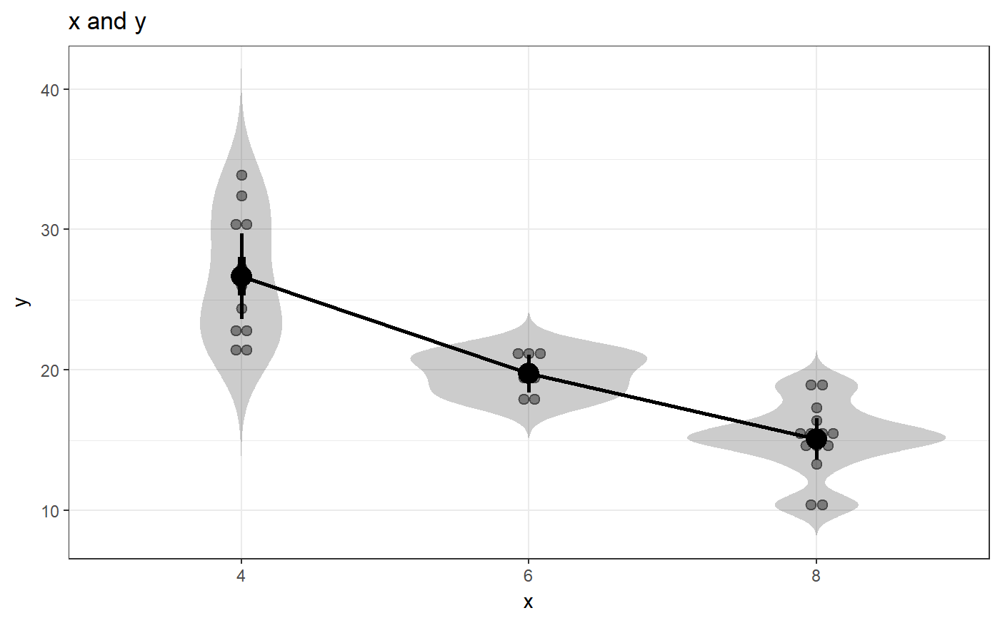
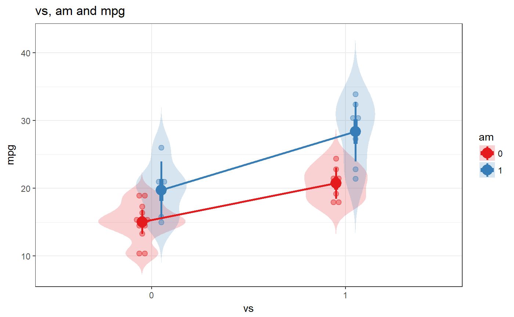
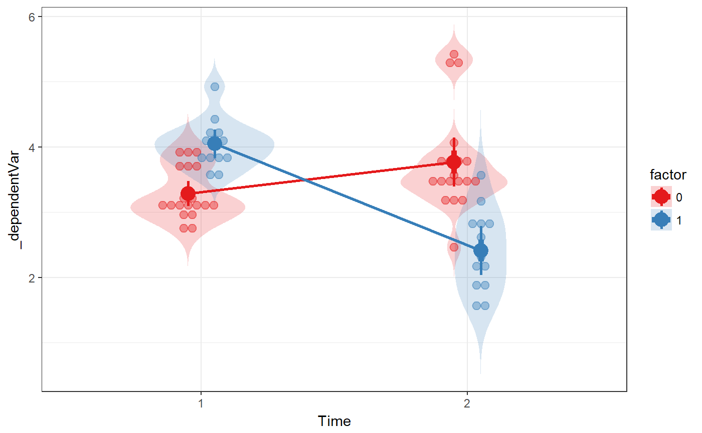

Flexible anova
This function is meant as a userfriendly wrapper to approximate the way analysis of variance is done in SPSS.
fanova(data, y, between = NULL, covar = NULL, plot = FALSE, levene = FALSE, digits = 2, contrast = NULL)
Arguments
| data | The dataset containing the variables to analyse. |
|---|---|
| y | The dependent variable. For oneway anova, factorial anova, or ancova, this is the name of a variable in dataframe |
| between | A vector with the variables name(s) of the between subjects factor(s). |
| covar | A vector with the variables name(s) of the covariate(s). |
| plot | Whether to produce a plot. Note that a plot is only produced for oneway and twoway anova and oneway repeated measures designs: if covariates or more than two between-subjects factors are specified, not plot is produced. For twoway anova designs, the second predictor is plotted as moderator (and the first predictor is plotted on the x axis). |
| levene | Whether to show Levene's test for equality of variances (using |
| digits | Number of digits (actually: decimals) to use when printing results. The p-value is printed with one extra digit. |
| contrast | This functionality has not been implemented yet. |
Details
This wrapper uses oneway and lm and lmer in combination with car's Anova function to conduct the analysis of variance.
Value
Mainly, this function prints its results, but it also returns them in an object containing three lists:
The arguments specified when calling the function
Intermediat objects and values
The results such as the plot.
See also
regr and logRegr for similar functions for linear and logistic regression and oneway, lm, lmer and Anova for the functions used behind the scenes.
Examples
### Oneway anova with a plot fanova(dat=mtcars, y='mpg', between='cyl', plot=TRUE);#> Flexible Analysis of Variance was called with: #> #> Dependent variable: mpg #> Factors: cyl #> #> Between-subjects factor 'cyl' does not have class 'factor' in dataframe 'mtcars'. Converting it now. #>#> ### Oneway Anova for y=y and x=x (groups: 4, 6, 8) #> #> Omega squared: 95% CI = [.51; .81], point estimate = .71 #> Eta Squared: 95% CI = [.55; .8], point estimate = .73 #> #> SS Df MS F p #> Between groups (error + effect) 824.78 2 412.39 39.7 <.001 #> Within groups (error only) 301.26 29 10.39 #>### Factorial anova fanova(dat=mtcars, y='mpg', between=c('vs', 'am'), plot=TRUE);#> Flexible Analysis of Variance was called with: #> #> Dependent variable: mpg #> Factors: vs & am #> #> Between-subjects factor 'vs' does not have class 'factor' in dataframe 'mtcars'. Converting it now. #> Between-subjects factor 'am' does not have class 'factor' in dataframe 'mtcars'. Converting it now. #>#> Anova Table (Type III tests) #> #> Response: mpg #> Sum Sq Df F value Pr(>F) #> (Intercept) 2718.03 1 225.5116 6.344e-15 *** #> vs 143.28 1 11.8878 0.001805 ** #> am 88.36 1 7.3311 0.011420 * #> vs:am 16.01 1 1.3283 0.258855 #> Residuals 337.48 28 #> --- #> Signif. codes: 0 *** 0.001 ** 0.01 * 0.05 . 0.1 1### Ancova fanova(dat=mtcars, y='mpg', between=c('vs', 'am'), covar='hp');#> Flexible Analysis of Variance was called with: #> #> Dependent variable: mpg #> Factors: vs & am #> Covariates: hp #> #> Between-subjects factor 'vs' does not have class 'factor' in dataframe 'mtcars'. Converting it now. #> Between-subjects factor 'am' does not have class 'factor' in dataframe 'mtcars'. Converting it now. #> #> Anova Table (Type III tests) #> #> Response: mpg #> Sum Sq Df F value Pr(>F) #> (Intercept) 170.670 1 22.7259 7.507e-05 *** #> vs 8.072 1 1.0748 0.3102 #> am 2.527 1 0.3365 0.5673 #> hp 21.750 1 2.8962 0.1017 #> vs:am 1.045 1 0.1392 0.7123 #> vs:hp 7.096 1 0.9449 0.3407 #> am:hp 0.275 1 0.0366 0.8498 #> vs:am:hp 0.378 1 0.0503 0.8244 #> Residuals 180.238 24 #> --- #> Signif. codes: 0 *** 0.001 ** 0.01 * 0.05 . 0.1 1### Repeated measures anova; first generate datafile dat <- mtcars[, c('am', 'drat', 'wt')]; names(dat) <- c('factor', 't0_dependentVar' ,'t1_dependentVar'); dat$factor <- factor(dat$factor); ### Then do the repeated measures anova fanova(dat, y=c('t0_dependentVar' ,'t1_dependentVar'), between='factor', plot=TRUE);#> Flexible Analysis of Variance was called with: #> #> Dependent variable: _dependentVar #> Factors: factor #> #>#> Analysis of Deviance Table (Type III Wald F tests with Kenward-Roger df) #> #> Response: y #> F Df Df.res Pr(>F) #> (Intercept) 291.1299 1 273.52 < 2.2e-16 *** #> factor 13.6367 1 60.00 0.0004811 *** #> time 3.1389 1 273.52 0.0775596 . #> factor:time 52.6222 1 60.00 9.214e-10 *** #> --- #> Signif. codes: 0 *** 0.001 ** 0.01 * 0.05 . 0.1 1